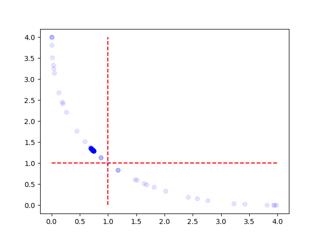

Note
Click here to download the full example code
2D Schaffer Function¶
A simple example on how to use multi-objective optimization is shown. The schaffer function is used.
[INFO][abstract_initial_design.py:92] Using `n_configs_per_hyperparameter` and ignoring `configs` and `n_configs`.
[INFO][abstract_initial_design.py:144] Using 10 initial design configurations.
[INFO][intensification.py:248] No incumbent provided in the first run. Sampling a new challenger...
[INFO][intensification.py:423] First run and no incumbent provided. Challenger is assumed to be the incumbent.
[INFO][intensification.py:558] Updated estimated cost of incumbent on 1 trials: 1.0
[INFO][intensification.py:558] Updated estimated cost of incumbent on 2 trials: 1.0
[INFO][intensification.py:558] Updated estimated cost of incumbent on 3 trials: 0.5
[INFO][abstract_intensifier.py:335] Challenger (0.3059) is better than incumbent (0.3062) on 3 trials.
[INFO][abstract_intensifier.py:359] Changes in incumbent:
[INFO][abstract_intensifier.py:362] --- x: -0.9324859157204628 -> 0.8640956835343081
[INFO][abstract_intensifier.py:335] Challenger (0.2866) is better than incumbent (0.2866) on 3 trials.
[INFO][abstract_intensifier.py:359] Changes in incumbent:
[INFO][abstract_intensifier.py:362] --- x: 0.8640956835343081 -> 0.8640174051851504
[INFO][abstract_intensifier.py:335] Challenger (0.2866) is better than incumbent (0.2866) on 3 trials.
[INFO][abstract_intensifier.py:359] Changes in incumbent:
[INFO][abstract_intensifier.py:362] --- x: 0.8640174051851504 -> 0.8639784171134841
[INFO][abstract_intensifier.py:335] Challenger (0.2866) is better than incumbent (0.2866) on 3 trials.
[INFO][abstract_intensifier.py:359] Changes in incumbent:
[INFO][abstract_intensifier.py:362] --- x: 0.8639784171134841 -> 0.8621703607018727
[INFO][abstract_intensifier.py:335] Challenger (0.2865) is better than incumbent (0.2866) on 3 trials.
[INFO][abstract_intensifier.py:359] Changes in incumbent:
[INFO][abstract_intensifier.py:362] --- x: 0.8621703607018727 -> 0.8613802024158463
[INFO][abstract_intensifier.py:335] Challenger (0.2865) is better than incumbent (0.2865) on 3 trials.
[INFO][abstract_intensifier.py:359] Changes in incumbent:
[INFO][abstract_intensifier.py:362] --- x: 0.8613802024158463 -> 0.8607574654896779
[INFO][abstract_intensifier.py:335] Challenger (0.2865) is better than incumbent (0.2865) on 3 trials.
[INFO][abstract_intensifier.py:359] Changes in incumbent:
[INFO][abstract_intensifier.py:362] --- x: 0.8607574654896779 -> 0.86057300810144
[INFO][abstract_intensifier.py:335] Challenger (0.2865) is better than incumbent (0.2865) on 3 trials.
[INFO][abstract_intensifier.py:359] Changes in incumbent:
[INFO][abstract_intensifier.py:362] --- x: 0.86057300810144 -> 0.8602103898606681
[INFO][abstract_intensifier.py:335] Challenger (0.2865) is better than incumbent (0.2865) on 3 trials.
[INFO][abstract_intensifier.py:359] Changes in incumbent:
[INFO][abstract_intensifier.py:362] --- x: 0.8602103898606681 -> 0.859905318504627
[INFO][abstract_intensifier.py:335] Challenger (0.2865) is better than incumbent (0.2865) on 3 trials.
[INFO][abstract_intensifier.py:359] Changes in incumbent:
[INFO][abstract_intensifier.py:362] --- x: 0.859905318504627 -> 0.8598739916684282
[INFO][abstract_intensifier.py:335] Challenger (0.2865) is better than incumbent (0.2865) on 3 trials.
[INFO][abstract_intensifier.py:359] Changes in incumbent:
[INFO][abstract_intensifier.py:362] --- x: 0.8598739916684282 -> 0.8597295956781026
[INFO][abstract_intensifier.py:335] Challenger (0.2865) is better than incumbent (0.2865) on 3 trials.
[INFO][abstract_intensifier.py:359] Changes in incumbent:
[INFO][abstract_intensifier.py:362] --- x: 0.8597295956781026 -> 0.859520085979836
[INFO][abstract_intensifier.py:335] Challenger (0.2865) is better than incumbent (0.2865) on 3 trials.
[INFO][abstract_intensifier.py:359] Changes in incumbent:
[INFO][abstract_intensifier.py:362] --- x: 0.859520085979836 -> 0.8593199836090943
[INFO][abstract_intensifier.py:335] Challenger (0.2865) is better than incumbent (0.2865) on 3 trials.
[INFO][abstract_intensifier.py:359] Changes in incumbent:
[INFO][abstract_intensifier.py:362] --- x: 0.8593199836090943 -> 0.8587705866744733
[INFO][abstract_intensifier.py:335] Challenger (0.2865) is better than incumbent (0.2865) on 3 trials.
[INFO][abstract_intensifier.py:359] Changes in incumbent:
[INFO][abstract_intensifier.py:362] --- x: 0.8587705866744733 -> 0.8574074961764109
[INFO][abstract_intensifier.py:335] Challenger (0.2865) is better than incumbent (0.2865) on 3 trials.
[INFO][abstract_intensifier.py:359] Changes in incumbent:
[INFO][abstract_intensifier.py:362] --- x: 0.8574074961764109 -> 0.8571993851749746
[INFO][abstract_intensifier.py:335] Challenger (0.2865) is better than incumbent (0.2865) on 3 trials.
[INFO][abstract_intensifier.py:359] Changes in incumbent:
[INFO][abstract_intensifier.py:362] --- x: 0.8571993851749746 -> 0.8569651981964457
[INFO][abstract_intensifier.py:335] Challenger (0.2865) is better than incumbent (0.2865) on 3 trials.
[INFO][abstract_intensifier.py:359] Changes in incumbent:
[INFO][abstract_intensifier.py:362] --- x: 0.8569651981964457 -> 0.856959899407526
[INFO][abstract_intensifier.py:335] Challenger (0.2865) is better than incumbent (0.2865) on 3 trials.
[INFO][abstract_intensifier.py:359] Changes in incumbent:
[INFO][abstract_intensifier.py:362] --- x: 0.856959899407526 -> 0.8567608637383648
[INFO][abstract_intensifier.py:335] Challenger (0.2865) is better than incumbent (0.2865) on 3 trials.
[INFO][abstract_intensifier.py:359] Changes in incumbent:
[INFO][abstract_intensifier.py:362] --- x: 0.8567608637383648 -> 0.8562151402955451
[INFO][abstract_intensifier.py:335] Challenger (0.2864) is better than incumbent (0.2865) on 3 trials.
[INFO][abstract_intensifier.py:359] Changes in incumbent:
[INFO][abstract_intensifier.py:362] --- x: 0.8562151402955451 -> 0.8557358664458059
[INFO][abstract_intensifier.py:335] Challenger (0.2527) is better than incumbent (0.2558) on 3 trials.
[INFO][abstract_intensifier.py:359] Changes in incumbent:
[INFO][abstract_intensifier.py:362] --- x: 0.8557358664458059 -> 1.0849066921609452
[INFO][facade.py:269] Final Incumbent: {'x': 1.0849066921609452}
[INFO][facade.py:270] Estimated cost: 0.25271859054525136
from __future__ import annotations
from typing import Dict, Tuple
import numpy as np
from ConfigSpace import Configuration, ConfigurationSpace, Float
from matplotlib import pyplot as plt
from smac import HyperparameterFacade, Scenario
from smac.facade import Facade
from smac.multi_objective.aggregation_strategy import MeanAggregationStrategy
__copyright__ = "Copyright 2021, AutoML.org Freiburg-Hannover"
__license__ = "3-clause BSD"
def schaffer(x: float) -> Tuple[float, float]:
f1 = np.square(x)
f2 = np.square(np.sqrt(f1) - 2)
return f1, f2
def target_algorithm(config: Configuration, seed: int = 0) -> Dict[str, float]:
f1, f2 = schaffer(config["x"])
return {"metric1": f1, "metric2": f2}
def plot(all_x: list[float]) -> None:
plt.figure()
for x in all_x:
f1, f2 = schaffer(x)
plt.scatter(f1, f2, c="blue", alpha=0.1, zorder=3000)
plt.vlines([1], 0, 4, linestyles="dashed", colors=["red"])
plt.hlines([1], 0, 4, linestyles="dashed", colors=["red"])
plt.show()
def plot_from_smac(smac: Facade) -> None:
rh = smac.runhistory
all_x = []
for trial_key in rh:
config = rh.ids_config[trial_key.config_id]
all_x.append(config["x"])
plot(all_x)
if __name__ == "__main__":
# Simple configspace
cs = ConfigurationSpace({"x": (-2.0, 2.0)})
# Scenario object
scenario = Scenario(
configspace=cs,
n_trials=150,
objectives=["metric1", "metric2"],
)
smac = HyperparameterFacade(
scenario=scenario,
target_algorithm=target_algorithm,
multi_objective_algorithm=MeanAggregationStrategy(scenario),
overwrite=True,
)
incumbent = smac.optimize()
# Plot the evaluated points
plot_from_smac(smac)
Total running time of the script: ( 0 minutes 1.968 seconds)